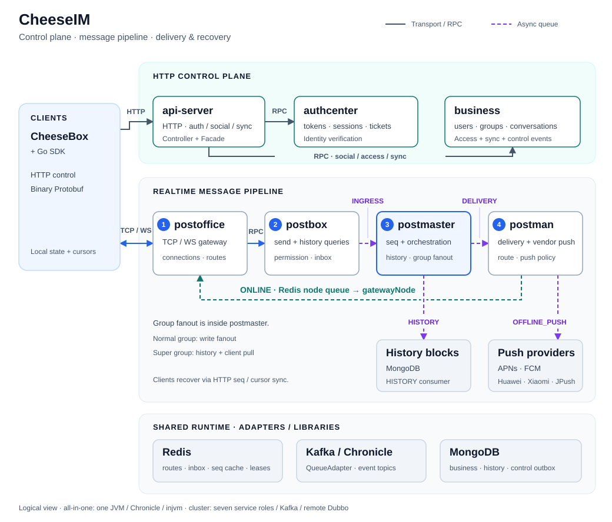

CheeseIM 服务总览
实线：传输 / RPC；虚线：异步队列。图示为逻辑服务视图，单 JVM 联调与独立服务部署共用这些角色。

打开 SVG 原图 · 中文 README · English README

SVG 是唯一图源，本页直接引用它，无需导出步骤、联网字体或脚本。窄屏可横向滚动。README 内另有可展开的消息时序图，用于说明入队 ACK、异步历史和在线投递的不同完成时点。
为避免主图变成完整调用网，辅助鉴权 / 权限 RPC、投递结果、控制事件补偿的全部连线没有展开；详细边界见 架构评估 与 协议说明。